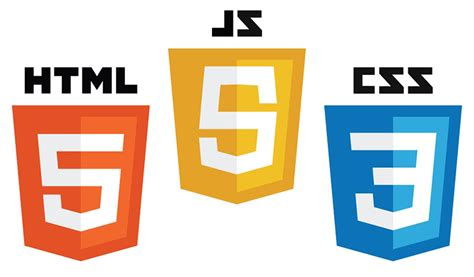

Кем стать в ИТ сфере?
Вы определились с выбором своей профессии и уже твердо для себя решили, что хотите пойти в ИТ сферу, но у Вас остался вопрос какое именно направление выбрать? Эта статья поможет Вам разобраться какие есть направления, что перспективнее сейчас и будет в будущем. И какое направление подойдет именно Вам исходя из Ваших интересов.
Web-разработчик
Одним из самых популярных направлений на сегодняшний день является веб-разработка. То есть просто создание сайтов. Для этого необходимо понимать HTML, CSS, а также такие языки программирования как JS (JavaScript) и PHP. С помощью навыков владения языком гипертекстовой разметки HTML вы сможете создавать основу сайта. Что касается CSS это дополнение к HTML, с помощью которого разработчик настраивает внешний вида сайта. PHP позволяет программировать взаимодействия пользователя с сайтом, передачи нужной информации в базу данных. JavaScript позволит создать сайт более динамичным, более функциональными. Саму же разработку сложных сайтов разделяют на: разработку внешнего вида (фронтенд), разработку логики (часть кода, который не виден пользователю / бэкенд) и фулстек разработка (разработка внешнего вида и логики одним программистом).
Frontend-разработчик
Одно из самых востребованных направлений в ИТ сфере. Фронтенд-разработчики отвечают за реализацию визуальной части сайта или приложения — так называемый пользовательский интерфейс. Востребованность данной специализации не зависит от выбора технологий серверной части сайта или доменной области бизнеса. Такие специалисты в добавок к стандартным HTML, CSS и JS часто используют в своей работе различные фреймворки такие, как Vue, Angular и (или) библиотеки на подобии React, WebPack и прочее. Также трендом среди фронтенд-разработчиков является использование надстройки над языком программирования JavaScript — TypeScript, который добавляет в язык статическую типизацию.
Backend-разработчик
Специалисты данного направления, чаще других решают различные логические задачи и стремятся написать максимально быстрые алгоритмы для решения задач бизнеса. Для решения данных задач используются специализированные языки программирования такие как уже указанный PHP или NodeJS, Go, Java, Net, Python, Ruby и другие. Бэкенд специалисты плотно взаимодействуют с системами хранения информации такие как SQL и NoSQL базы данных, S3 файловые хранилища, а также с легкостью смогут построить взаимодействие с другими сервисами по протоколу API.
Fullstack-разработчик
Эта специализация является компромиссом между веб-разработчиками реализующими простые сайты и командой из фронтенд и бэкенд-разработчиков, которые реализуют особо крупные ИТ-платформы. С помощью универсальной специализации данные специалисты идеально подходят для исследовательских задач и тестирования гипотез для бизнеса и быстрой доставки минимальных жизнеспособных продуктов.
Software-разработчик
Еще одним популярным направлением на сегодняшний день это разработка ПО для операционных систем. То есть это просто любые программы, которые предварительно устанавливаются на компьютере (word, excel и т.п.). Для этого подходят языки программирования как: C (си плюс плюс), C# (си шарп).
Mobile-разработчик
Рынок мобильных приложений за последние годы вырос в несколько раз. И в дальнейшем будет еще больше расти. Многие разработчики выбирают это направление за возможность создать свое мобильное приложение, а потом в дальнейшем просто его поддерживать, иногда выпуская обновление. То есть по сути получать пассивный доход. К тому же создав гемплей таким образом, чтобы сами пользователи были заинтересованы привлекать (приглашать) друзей, Вы сможете также частично избавить себя постоянно задумываться и тратить время, средства для привлечения новых пользователей. Для этой деятельности подойдет уже ранее упомянутые языки C, C#, а также java, Flutter и другие.
ML-разработчик
Учитывая дальнейшее активное развитие машинного обучения, искусственного интеллекта стоит задуматься об изучении языка программирования python. Данным язык наиболее всего подходит для этого. Он легкий в изучении, простой при использовании. А за последние годы так и вовсе считается самым популярным языком программирования. Да и по оплате труда на как на фриланс биржах, так и в компаниях более высокооплачиваемый. Если же Вы не планируйте пока что изучать языки программирования, но желаете также работать в ИТ-сфере вы можете выбрать такие направления как:
Web-дизайнер
Дизайнер помогает создать простые и не шаблонные сайты для повышения конверсии сайта. Такие специалисты владеют теорией цвета и типографики, а также используют в работе Photoshop, Illustrator, Figma и Sketch. article image UX/UI-дизайнер Данный вид специалистов заботятся что бы пользователь чувствовал себя на сайте максимально комфортно и мог достичь своей цели в минимальное количество шагов (кликов). Именно специалисты по пользовательскому опыту помогают бизнесу искать баланс между огромным количеством настроек и параметров и простым и удобным интерфейсом.
ИТ-маркетолог
Маркетолог отвечает за построение и привлечение внимание к бренду. ИТ-маркетолог выполняет веже задачи, но на просторах сети интернет. Данные специалисты строят гипотезы и создают стратегии продвижения, что бы помогать бизнесу выполнять планы и зарабатывать.
SMM-специалист
Социальные сети плотно интегрировались в жизнь людей. Поэтому появился отдельный вид специалистов которые помогают вести коммуникации бизнеса с потребителями в социальных сетях Instagram, TikTok, Facebook, VK и прочее. Этих людей заботит общественное мнение о компании, а так же помогают бизнесу продвигаться на просторах соц.сетей через охваты рекомендаций и блогеров.
SEO-специалист
Специалисты данного направления активно работают над репутацией сайта в поиске Google или Yandex. Они знают что гуглят и яндексят пользователи и подсказывают команде на какие вопросы должен ответить бизнес что бы получить клиента.
Менеджер по продажам ИТ-услуг
Посредник между разработчиком и заказчиком, разработчиком и конечным пользователем. Помогает просчитать различные варианты решения задач бизнеса и выбрать максимально подходящее текущим нуждам решение.
HR-специалист
Работник в области подбора и роста специалистов в рамках компании. Данные специалисты помогают сотрудникам сформулировать и достигать карьерных целей, а также помогают подобрать максимально подходящий проект для человека и человека для проекта.